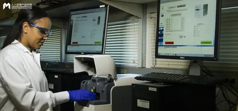

医疗大模型院内落地路径与产品化难点
DataHot 速览
文章基于作者多年医疗数据平台与AI应用落地经验，指出截至2025年末全国已发布352个医疗垂直大模型，但能跑通“部署—使用—付费”闭环的产品仍稀缺。作者将卡点归为数据治理、临床信任、工作流嵌入、收费模式四重结构性障碍，其中清洗标注成本占AI研发总成本40%以上，通用大模型约50%医疗回答被评为“有问题”。文章对比讯飞医疗星火、京东健康京医千询与卓医、商汤医疗“大医”三条路径，并提出数据治理先行、低风险场景积累信任、能力内生进流程、立项锁定付费主体的落地次序。
为什么值得关注：对数据从业者而言，文章把医疗AI产品化失败的第一性原因落到院内多源异构数据治理、业务口径标准化和BI/360视图的数据底座上，并给出可复用的落地次序与产品化取舍，适合做垂直行业AI数据项目复盘参考。
本文目录 26 节
- 1. 落地困局的总体判断：技术验证已经过关，商业化闭环仍未打通
- 2. 医院数据底座：AI落地的第一道门槛
- 2.1 三级数据孤岛：院内、院际、全域的割裂形态
- 2.2 数据质量与成本：99%的原始数据不可直接训练
- 2.3 破局路径：可信数据空间与利益共享机制
- 3. 数据底座之上的三类应用形态
- 3.1 患者360视图：为模型提供完整上下文的临床载体
- 3.2 BI看板AI应用：从”看报表”到”问数据”的决策链重构
- 3.3 共性前提：三类应用都卡在同一个地方
- 4. 大模型临床安全校验：严肃医疗不可逾越的底线
- 4.1 幻觉控制与循证溯源
- 4.2 工程化管控与可信AI框架
- 4.3 责任边界：AI是临床助理而非决策主体
- 5. 为什么很多医疗AI落不了地：四大结构性难点
- 5.1 数据治理：从”有数据”到”能用数据”的鸿沟
- 5.2 临床信任：从”评测第一”到”医生签字”的距离
- 5.3 工作流嵌入：从”外挂工具”到”内生能力”的跨越
- 5.4 收费模式：从”有用”到”有人付钱”的商业闭环断裂
- 6. 主流产品拆解：三种差异化落地路径
- 6.1 讯飞医疗星火医疗大模型：全域覆盖加数据飞轮
- 6.2 京东健康京医千询与京东卓医：AI加供应链的服务闭环
- 6.3 商汤医疗”大医”：通专融合与医疗世界模型
- 6.4 三种路径对比与适用边界
- 7. 趋势研判与院内AI建设建议
- 7.1 行业趋势：专科深耕、AI原生底座与支付多元化
- 7.2 对院内AI建设的五条建议
原文
医疗大模型数量已超352个，但能跑通“部署—使用—付费”闭环的产品依然稀缺。本文基于作者多年医疗数据平台与AI应用落地经验，拆解数据治理、临床信任、工作流嵌入、收费模式四重结构性障碍，并对比讯飞医疗、京东健康、商汤医疗三条突围路径，为院内AI产品化提供实战复盘。

——一个在医疗软件行业从业多年，从底层数据平台做到医疗AI应用的人，对当前落地困局的复盘
我这些年在医疗行业做过医院信息平台、区域健康信息平台、数据平台、集成平台，也直接负责过患者360视图应用、BI看板应用与临床AI辅助应用的设计研发落地。这篇报告以这段经历为视角，复盘医疗大模型在院内的落地路径与产品化难点。
行业层面，截至2025年末全国已发布352个医疗垂直大模型，模型已经过剩，但能跑通”部署—使用—付费”完整链条的产品依然稀缺。
我把卡点归为四重结构性障碍：
- 数据治理上，院内HIS/LIS/EMR/PACS割裂形成三级孤岛，清洗标注成本占AI研发总成本40%以上；
- 临床信任上，通用大模型约50%的医疗回答被评为”有问题”，医生不会为不可解释的输出签字；
- 工作流嵌入上，通用AI技术栈、数据平台、传统集成平台三条路径的设计目标都不是实时执行，外挂式部署使医生负担不降反升；
- 收费模式上，独立收费编码、医保目录、商保产品三重缺位。
患者360视图、BI看板与临床辅助决策三类应用看似不同，在我做过的全部项目里却共享同一个失败原因：院内多源异构数据的治理与业务口径标准化没有先行。
产品拆解显示三条互不通用的路径：
- 讯飞医疗星火以16亿人次语音与12亿次诊疗数据构成飞轮，病历采纳率达91%并转向按采纳量计费；
- 京东健康京医千询与卓医以AI加供应链实现方案到履约的闭环，绕开医疗服务收费难题；
- 商汤医疗”大医”以通专融合与HIMSS可信AI框架主攻影像、病理、科研高壁垒专科。
我的结论是：院内AI没有通吃产品，选产品即选路径；落地次序必须是数据治理先行、低风险场景积累信任、能力内生进流程、立项阶段锁定付费主体，四道门槛不能并行跨越。
1. 落地困局的总体判断：技术验证已经过关，商业化闭环仍未打通
写这篇报告之前，我先说明自己的位置：这些年在医疗行业里，我从医院信息平台、区域健康信息平台做到数据平台与集成平台，后来又负责患者360视图应用、BI看板应用和临床AI辅助应用的设计研发与落地。
也就是说，大模型进来之前要打的那几层地基，我基本都亲手铺过一遍。
这个经历让我在看今天的医疗大模型时，关注的重点和纯算法背景的人不太一样——我不太关心模型评测排第几，我更关心它要求我把数据底座整到什么状态、能不能嵌进我已经跑了十年的那些流程、以及验收之后第二年还有没有人愿意为它掏钱。
先看行业所处的阶段。
截至2025年末，全国已发布352个医疗垂直大模型，行业正式从技术爆发期进入聚焦落地与商业化闭环的拐点。这个数字对我这种做交付的人来说，含义很直接：模型已经过剩了，能在院内跑通”部署—使用—付费”完整链条的产品依然稀缺。讯飞医疗、京东健康、商汤医疗三家头部企业分别在病历生成、患者服务、专科辅诊场景取得阶段性成果，但整个行业的规模化落地仍被四重结构性障碍卡住。
这四重障碍，恰好是我这些年做项目时逐个撞过的墙。
第一重是数据治理
院内HIS、LIS、EMR、PACS系统割裂形成三级孤岛，数据清洗与标注成本占AI研发总成本40%以上。
第二重是临床信任
《BMJ Open》2026年的系统评估显示，主流通用大模型约50%的医疗回答被评为”有问题”，医生对黑盒模型的信任无法仅靠技术参数建立。
第三重是工作流嵌入
旧系统缺乏标准化接口，AI多以外挂形式运行，反而增加医生操作负担。
第四重是收费模式
AI辅助诊疗缺乏独立收费编码，医保未纳入支付目录，按词元收费的创新模式仍处试点阶段。
表1：医疗大模型院内落地的四重结构性障碍（含本人交付经验中的对应表现）
需要说明的是，表格最后一列是我基于自身交付经历的定性判断，不是外部数据。
这四重障碍之间存在明确的因果顺序，而不是并列关系——这一点是我在多个项目里反复验证过的。
- 数据底座不达标，患者360视图与BI看板就只能是演示级产品，我见过太多在汇报现场跑得很漂亮、一进真实环境就口径错乱的看板；
- 模型输出缺乏循证溯源，临床科室就不会签字采信；
- AI不能内生进业务流程，医生就没有持续使用的动机；
而前三者哪怕全部解决，只要付费主体缺位，项目依然会在验收后停运。
所以本报告的分析次序，就是我这些年踩坑的次序：先拆数据底座及其上的三类应用形态（这三类我都做过），再分析临床安全校验的技术与责任框架，随后逐一深挖四重难点，最后通过三款主流产品的路径对比，回答”什么样的产品才可能穿越周期”。
2. 医院数据底座：AI落地的第一道门槛
2.1 三级数据孤岛：院内、院际、全域的割裂形态
医疗大模型的效能上限不取决于算法参数规模，而取决于数据底座的质量。这句话我在做集成平台的年代就相信，做大模型应用的今天更相信。当前中国医疗数据呈现”多而不优、散而不通”的特征，而这种特征在三个层级上同时存在、层层叠加。
院内层面，HIS（医院信息系统）、LIS（检验系统）、EMR（电子病历）、PACS（影像归档系统）建设年代不同、厂商各异、接口封闭，同一医院内部的病历、检验、影像数据难以自动贯通，手动归集成本极高。
这一层的割裂最为隐蔽，因为它发生在同一家法人主体内部。
我做医院信息平台时最常见的场景是：院领导和信息科都默认”我们的数据是通的”，直到项目启动做数据盘点，才发现一次完整的患者就诊轨迹需要跨系统人工拼接——门诊挂在HIS、检验结果在LIS、报告在PACS、病程记录在EMR，四套系统的患者主索引都不完全一致。
院际层面，各级医疗机构将临床数据视为核心竞争资产，省、市、县三级医保、公共卫生、临床数据分属不同管理条线，跨机构数据协作审批流程冗长。
这在我做区域健康信息平台时体会更深：技术上的数据交换从来不是难点，难点是每一级条线的管理权属与审批链条。
全域层面，院前体检、院内诊疗、院外居家监测、康复护理数据割裂，无法形成患者全生命周期数据链，直接限制慢病管理、预后预测类AI模型的精度上限。
三层孤岛对产品形态的影响是不同的，这一点在我从集成平台转向患者360视图应用时变得非常清楚。院内孤岛决定了单点AI应用能否跑通，是病历生成、影像辅诊类产品的生死线；院际孤岛决定了模型能否获得足够规模的训练样本，是专科模型精度的天花板；全域孤岛则决定了健康管理类产品的价值上限，因为它切断了从诊疗到随访的因果链。
这也解释了我在不同医院看到同一个模型实测效果差异极大的原因——差异来源不是算法，而是该院数据底座的贯通程度。
2.2 数据质量与成本：99%的原始数据不可直接训练
数据孤岛之外，第二重困境是数据本身的质量与治理成本。
据行业测算，数据清洗与标注成本占据AI研发总成本的40%以上。
更严峻的是可用比例：99%的原始医疗数据无法直接用于AI训练或交易，只有经过结构化、标准化、脱敏、标注在内的六道工序炼出的高质量数据集才具备价值。
做过数据平台的人对这两个数字不会感到意外。我在数据平台项目里做的很大一部分工作，本质就是把非结构化的临床文本变成能被程序消费的字段，这件事的投入产出比长期是负的——医院看不到直接收益，却要先付出一大笔治理成本。
这一比例在数据交易实践中得到了直接印证。福州长乐区医院售出的100余例颅脑MRI影像数据定价9759元，其溢价完全来自”炼过”的结构化程度。
换句话说，数据的价值不在采集环节产生，而在治理环节产生；医院手里握着海量数据却不具备变现能力，缺的正是这道治理工序。
治理成本还带来一个被普遍低估的派生问题：基层数据缺失导致头部医院训练的模型下沉后”水土不服”，根本原因是基层缺乏高质量的生化、影像乃至基因数据，且患者就诊路径不连续，数据天然碎片化。
这意味着数据治理不是一次性投入，而是一项随部署范围扩大而线性增长的成本。
厂商在头部三甲医院做出的评测成绩无法自动平移到县域医疗机构，因为二者的数据分布本身就不在同一空间。
我在区域平台项目里见过完全相同的现象：同一套应用在地市级跑得很好，下沉到县级就要重做一遍数据适配。任何以”一次训练、全域部署”为前提的商业测算，都会在基层落地阶段被推翻。
2.3 破局路径：可信数据空间与利益共享机制
面对孤岛与成本双重困境，行业正在探索两条互补的路径：技术层面解决”能不能流通”，制度层面解决”愿不愿流通”。这两条我都在区域健康信息平台的实践中遇到过对应版本。
技术路径是以省为单位建设医疗健康可信数据空间，采用联邦学习、隐私计算实现”原始数据不出院、可用不可见”。这条路径的实质是把数据治理从各家医院的重复投入，转变为区域级公共基础设施的集中投入，从而摊薄前述40%以上的成本占比。
以我做过区域平台的经验看，这个方向是对的——区域级共建是唯一能把治理成本压到医院可承受范围的办法，单家医院自己建数据底座，投入永远追不上系统迭代速度。北电数智与中日友好医院联合推出的”樱智α·医疗可信平台”采用”1+N+1″架构，在国内率先实现医疗数据从汇聚、治理到流通使用的全链路打通。
制度路径是建立利益共享机制：医院贡献数据可免费优先使用迭代后的AI系统并参与商业化收益分成，患者授权脱敏数据用于科研可兑换健康管理服务。这一设计直指当前最大的制度性障碍——患者健康数据、医院衍生数据、医保支付数据缺乏明确的”三权分置”界定，医疗机构因此”不敢开、不愿开”。
我完全理解这种”不敢开”：在没有权责界定的情况下，信息科负责人开放数据的下行风险是明确的，上行收益却是模糊的。当贡献数据的一方无法从流通中获益，任何技术方案都只会停在试点阶段。可信数据空间提供合规通道，收益分成提供开放动机，两者缺一，数据底座就无法真正重构。
3. 数据底座之上的三类应用形态
患者360视图应用、BI看板应用、临床AI辅助应用，是我近些年直接负责设计研发的三类产品。它们服务的角色不同、解决的问题不同，但在我的实操经验里，三者共享同一个底座、也共享同一个失败原因。这一章我按做过的顺序来讲。
3.1 患者360视图：为模型提供完整上下文的临床载体
患者360视图是医院数据底座在临床侧的核心应用载体，其本质是把分散在多系统中的碎片化数据整合为动态更新的患者全局画像，为大模型提供完整的上下文。没有这层整合，大模型面对的就是单次问诊的孤立文本片段，而不是一个有既往史、有检验趋势、有用药记录的完整患者。我做这个应用时最直观的感受是：360视图对大模型的意义，等同于集成平台对业务系统的意义——它不产生新数据，它只是让数据在正确的时刻以正确的结构出现。
画像的构建口径正在走向标准化。
内蒙古自治区人民医院发布的”患者全局画像与智能服务”场景，明确从人口统计学、临床表征、实验室指标、治疗干预、生理监测、环境暴露、行为习惯、社会经济学8个维度构建动态更新的患者全局画像。
面向医生端的画像则有不同的数据来源结构：太美医疗科技的星图-HCP360整合300万HCP公开数据，覆盖医学文献、会议活动、社交媒体、在线问诊在内的全域数据，通过AI驱动的自动化打标实现精准客户洞察。
两者的差异说明”360视图”并非单一产品形态：患者侧画像依赖院内多系统打通，医生侧画像依赖公开数据聚合，数据底座的要求完全不同。
我在设计患者360视图时踩过这个坑——最初按医生画像的思路做标签体系，后来才发现患者侧的核心不是打标，而是把多源数据按时间轴对齐。
真正能体现底座价值的，是那些已经跑出量化收益的场景。
讯飞晓医基于院内高质量临床数据与个人健康画像，为试点区域149万余名签约居民生成动态全生命周期健康档案，医生调阅全量健康数据的耗时从5分钟压缩至30秒。
迈瑞医疗”启元”重症医学大模型在ICU场景中，仅用5秒即可生成危重患者过去72小时的完整病情时间线，同步弹出休克风险预警，使重症患者出院人次提升13%，平均住院日缩短12%。
ICU这一案例在我看来说服力最强：5秒生成72小时时间线的前提是床旁监测、检验报告、影像资料与医嘱记录四类数据实时贯通，任何一类断链都会让时间线出现空洞，模型也就无法给出可信的风险预警。
这正是我在集成平台项目里反复处理的问题——实时性要求越高，对接口稳定性和消息时序的要求就越苛刻。
表2：患者360视图相关实践的画像维度、数据来源与量化成效
3.2 BI看板AI应用：从”看报表”到”问数据”的决策链重构
传统BI工具只能告诉管理者”发生了什么”，AI赋能的BI看板正在重构医院运营管理的决策链路，实现从”人找数据”到”数据找人”的范式转变。我在做BI看板应用的那几年，最深的体会是：医院管理者不是不想用数据，而是被指标口径折磨得不敢用。医院的运营指标数量与口径复杂度远超常规零售或制造业，同一个”平均住院日”在不同科室的统计规则可能就不一样，管理者不可能靠人力遍历，于是干脆回到经验决策。AI在这一层的价值，首先是替管理者承担口径匹配的负担。
第一层能力是自然语言问数。腾讯云BI的智能助手ChatBI支持通过自然语言对话完成数据分析，并提供数据解读、波动归因、业务优化建议。Quick BI AIPro让业务用户以对话方式直接驱动”概览→拆解→归因→诊断→行动”的完整决策路径，响应速度从传统BI的需求排期数天缩短至秒级。落到医院场景，院长只需提问”上周哪个科室超支病种最多？原因是什么？”，系统即可自动解析意图、匹配指标口径、生成可视化图表并附带文字解读。这里的”匹配指标口径”是技术难点所在，也是数据底座能力的直接体现——我在BI看板项目里投入精力最多的地方，从来不是图表，而是指标字典与口径映射表。
第二层能力是智能归因与自动运营报告。中国电信联合北京安贞医院发布的全国首个”公立医院运行管理大模型”，打通HIS、SPD、ODR三大核心系统，治理300余万条基础数据，建立800余个核心管理指标，使运行管理报告生成速度从几天提升至5分钟，管理响应速度提升95%，异常预警响应时间不超过5分钟。熙软科技打造的HO-Agent医院运营智能体”小熙”，基于DeepSeek在内的基座模型，通过自然语言交互为管理者提供智能报告分析及运营辅助决策，并构建了涵盖财务收支、人力物资、绩效考核全维度的ODR运营数据中心知识库。安贞医院的案例给出一条我认为最值得抄的成功要素链：先打通三大系统，再治理300余万条数据，再建立800余个指标，最后才谈得上报告提速与预警前置。这个顺序不能颠倒。我见过的项目失败案例，绝大多数都是跳过前两步直接上智能体，产出的只会是口径错误的报表——而一份口径错误的报表比没有报表更危险，因为它会带着管理者的信任做出错误决策。
第三层能力是DRG/DIP智能分组与病种成本分析，这是当前刚性最强的落地场景。在支付改革压力下，AI驱动的BI看板已深入病种成本管理：安徽医尔康的DRG/DIP智能入组系统通过病案首页语义解析与临床特征深度匹配，实现分组动态校准，并为医生提供预测盈亏、平均住院日、费用构成详情，辅助规避亏损风险。思迈特Smartbi的医院运营管理决策平台以BI为基础架构，覆盖财务管理、人事管理、资产设备、成本分析全模块，支持自由新增分析主题而无需重新开发系统。DRG/DIP场景之所以刚性，是因为它直接关联医院收入：分组错误即意味着实际亏损，管理者有明确动机为这类能力付费。这一点与临床辅助决策的付费困境形成鲜明对照，也是我判断院内AI商业化次序的依据——先做能算清账的运营场景，再碰算不清账的临床场景。
表3：BI看板AI应用的能力层次、代表实践与量化指标
3.3 共性前提：三类应用都卡在同一个地方
患者360视图、BI看板、临床辅助决策看似服务不同角色、解决不同问题，但成败都取决于同一件事：院内多源异构数据的治理与标准化是否先行完成，以及业务口径能否被模型正确理解。这是我把三类应用都做了一遍之后最确定的一条结论。
这里存在一个容易被忽视的错配——同一临床数据在不同科室、不同患者背景下含义截然不同，通用大模型能”读懂”文字却难以理解院内业务口径和统计规则。
我做临床AI辅助应用时对这个错配的印象最深：模型能把一段病程记录总结得很通顺，但它不知道本院的”入院评估完成率”是按什么分母算的，也不知道哪个指标在绩效方案里有特殊权重。
语言能力和业务口径理解是两件事。
这一错配的后果在三类应用中表现一致。
患者360视图里，它表现为同一个检验指标在不同科室参考区间下的误读；BI看板里，它表现为指标口径匹配错误导致的归因失真；临床辅助决策里，它表现为模型给出的建议在本院流程下不可执行。三者的解决方案也一致：在建设AI应用前，优先完成院内多源异构数据的治理与标准化，构建高质量专病数据集，这是所有AI应用的根基。
因此，医院在评估任何一款AI产品时，我建议第一个问的问题不是模型评测排第几，而是”这款产品要求我的数据底座达到什么状态，而我现在离那个状态有多远”。这个差距决定了项目的真实成本，也决定了它能否在验收之后继续被使用。以我的经验，这个差距在项目前期几乎总是被低估——因为它藏在信息科的日常运维里，不写在任何一份招标文档中。
4. 大模型临床安全校验：严肃医疗不可逾越的底线
4.1 幻觉控制与循证溯源
医疗场景对错误的容忍度极低，一次错误建议的代价可能是不可逆的患者伤害。《BMJ Open》2026年的研究系统评估显示，主流通用大模型约50%的医疗回答被评为”有问题”，近20%属于”高度有问题”。
这一数据决定了严肃医疗大模型必须攻克三座大山：性能优化以降低幻觉、监管合规、信任背书。
我在做临床AI辅助应用立项时，第一个被医务科问住的问题就是这个——你们怎么保证它不胡说。这个问题在当时没有好答案，现在有了几条可操作的技术路线。
第一条是推理链改造。
讯飞星火医疗大模型V3.5搭建了基础医学与临床医学双思维链：基础医学思维链依托生理、病理、解剖经典理论溯源底层逻辑，临床医学思维链结合权威诊疗指南与真实病例推导方案，配套完整循证溯源体系。该模型独创”证据对齐—反思校验—专家强化”循证推理技术，六大核心能力平均效果提升至92.4%。
双思维链的设计意图在我看来很明确：让模型的每一步推导都能追溯到一个可被医生核验的证据源，而不是输出一个看似合理但无从验证的结论。这与我做集成平台时的思路是同构的——不追求单点聪明，追求全链路可追溯。
第二条路线是知识库约束与幻觉率硬指标。医渡科技将幻觉发生率控制在1%以内，其循证知识库覆盖超3万部精选临床指南、超2000万篇高质量医学文献。把幻觉率作为可披露的产品指标，本身就是一种信任建设——它承认风险存在，并给出可被第三方复核的量化承诺，这与单纯宣称”模型更准确”的营销话术有本质区别，因为无法复核的承诺在医疗场景里等于没有承诺。
4.2 工程化管控与可信AI框架
算法层面的可靠性并不自动等于临床层面的可采信，中间需要一层工程与评估机制完成翻译。做过交付的人对这一层不会陌生：技术验证通过到临床能用之间，隔着的全部是工程活。
工程侧的代表方案是讯飞医疗自研的Harness双模式技术架构。该架构立足于临床应用痛点与药监合规要求，无需改动模型权重，依靠刚性约束、标准化封装、全链路业务编排，将碎片化的医疗行业经验转化为可批量复制、合规可控的工业化生产力。”不改权重”这一点在我看来尤其值得注意：它意味着安全管控发生在模型外层的确定性逻辑中，输出结果因此具备可审计性与可回溯性，这正契合药监对医疗器械软件变更控制的严格要求。相较于持续微调模型，外层工程管控的合规成本更低、验证周期更短——以我过去做项目的经验，任何需要重新验证模型本体的变更，都会把项目周期拉长一个量级。
评估侧的代表方案是可信AI框架。商汤医疗CMO钱琨指出，AI本质上仍属于黑盒统计模型，医生的信任无法靠技术参数堆砌获得。为此商汤与全球医院评级机构HIMSS共同设计了针对医学与临床的可信AI框架，包含三个维度：一是参考FDA审核逻辑的有效性与安全性标准，二是AI嵌入临床工作流的量化评估支撑，三是价值与卫生经济学评价，评估是否改善患者健康结局、提升效率并降低长期成本。这三个维度的组合逻辑是递进的——先证明安全有效，再证明能嵌进流程，最后证明值得付费。第二个维度对我这样的交付负责人最有价值，因为它把”嵌入工作流”从一个主观感受变成了可量化评估项。第三个维度则把技术评估直接对接到了支付方的决策依据上，这正是国内厂商普遍欠缺的一环。
4.3 责任边界：AI是临床助理而非决策主体
安全校验的最终落点不是技术指标，而是责任归属。行业共识是AI定位为”临床助理”，所有生成的医疗文书必须由具备资质的执业医师审核、修改并电子签名确认后方可归档，AI不承担直接法律责任。中国科学院院士张钹进一步明确：医生是临床决策者也是安全监督者，AI与医生是共生关系而非替代关系。
这一责任边界对产品设计的反向约束，远比表面看起来更强，而且我在临床AI辅助应用的设计过程中是直接感受到它的。既然医师必须审核并签名，那么产品就必须提供可核验的证据链，让医师能在合理时间内完成审核——如果医师需要逐字重查一遍模型输出，审核成本会超过手写成本，产品自然被弃用。所以在我参与的设计里，”医师审核”从来不是一个流程节点，而是一整套交互要求：证据要可点击、修改要可留痕、超范围要能一键转人工。这也解释了为什么循证溯源不是锦上添花的功能，而是决定采纳率的前置条件：讯飞医疗在头部三甲医院实现91%的病历采纳率，其底层支撑正是双思维链配套的证据溯源体系。责任在医生、能力在模型、证据在系统，三者的清晰分工是严肃医疗AI得以成立的前提。
5. 为什么很多医疗AI落不了地：四大结构性难点
这一章是全文我最想写的部分。前面几章讲的是”应该怎么做”，这一章讲的是”为什么明明知道该怎么做，还是做不成”。四条难点我都亲自撞过，下面每一条我都把行业层面的结论和我自己项目里的具体感受分开写，便于读者判断哪些是可引用的事实、哪些是我个人的经验判断。
5.1 数据治理：从”有数据”到”能用数据”的鸿沟
核心矛盾在于：医院拥有海量数据，但多为非结构化、非标化的”脏数据”，而通用大模型能读懂文字却难以理解院内业务口径和统计规则。这一矛盾在项目执行中会分解为三条具体障碍。
第一条是对接成本
医院各系统品牌厂家众多，接口不标准，数据格式与权限管控各异，需要协调信息科、医务科在内的多部门反复沟通，周期长、成本高。我的经验是：这条障碍的性质不是技术难度，而是组织协同。我在做集成平台项目时，纯技术工作通常占三成时间，剩下七成花在协调上——各厂商对接口文档的理解不一致、数据权限归属有争议、变更需要走院内多层审批。即便厂商具备对接能力，医院内部各科室的数据权限归属争议也足以让项目停滞数月。很多AI项目的实际工期远超预期，超期部分大多消耗在这一环节。
第二条是基层数据缺失
头部医院训练的大模型下沉到基层后”水土不服”，根本原因是基层缺乏高质量的生化、影像乃至基因数据，且患者就诊路径不连续，数据天然碎片化。我的经验是：这条障碍决定了”以头部医院背书换取基层市场”的策略存在内在断裂。我在区域健康信息平台项目里做过同样的下沉，得出的教训是——背书来自数据丰富的环境，交付却发生在数据贫瘠的环境，两者的适配工作量在投标阶段几乎无法准确估算。
第三条是制度性壁垒
患者健康数据、医院衍生数据、医保支付数据缺乏明确的”三权分置”界定，医疗机构因此”不敢开、不愿开”。三条障碍中，前两条靠投入可以缓解，第三条只能靠制度演进解决。这也是我认为数据治理是四重难点中最难被厂商单方面攻克的一项的原因——它不是花钱能解决的问题。
5.2 临床信任：从”评测第一”到”医生签字”的距离
核心矛盾在于：评测榜单上的高分不等于临床可用性。医生群体相对保守，规避风险意识强，对新工具的准确率、可解释性和潜在法律风险有极高顾虑。
失信任的第一个原因是黑盒特性。纵然模型输出逻辑通顺的诊疗意见，若缺乏证据溯源、推理链路不可解释、无法对齐临床指南，便无法获得临床采信。这与第4章的责任边界形成闭环：医师要为签名承担法律责任，就必须看得见推理依据；看不见的东西，无法签字。我做临床AI辅助应用时，医务科评审的第一份材料从来不是准确率报告，而是”出错之后责任怎么划分”。
失信任的第二个原因是场景错位。用为复杂疾病训练的模型应对基层常见病，或用通用模型处理专科问题，导致判断准确率下降，医生不敢轻易否定模型就要花更多时间核对，反而增加负担。我的经验是：这里暴露出一个产品设计的常见误区——厂商习惯用”最难场景下的表现”证明能力，但医院实际使用的是”最高频场景”，两者往往不重合。
信任的建立路径因此必须是自下而上、由细节累积的。商汤医疗钱琨强调，信任必须从临床工作流程的每一个细节入手，通过设置”专属边界”限定模型处理范围、超出范围自动转接人工的方式逐步积累。左医科技的经验则给出了组织层面的路径：第一步不是说服院长，而是深入科室争取主任和骨干医生支持，在试点中见到实效后再推广。这两条经验与我自己的交付体会完全一致：临床信任是一种科室级的社会资本，无法通过行政命令自上而下灌注，也无法通过评测榜单直接兑换。我见过院领导强推、科室消极应付最终停用的项目，也见过从一位科主任的试点起步、两年后铺满全院的项目。
5.3 工作流嵌入：从”外挂工具”到”内生能力”的跨越
核心矛盾在于：当前大量AI产品以外部集成方式附着于现有业务系统，与原有流程和数据体系割裂，造成跨系统操作和业务体验不一致。这一条对我来说最有发言权，因为我做的集成平台，本身就是”外挂式集成”的典型形态——我知道它的边界在哪里。
问题的根源可以从三条主流技术路径的原始设计目标中找到。
- 通用AI技术栈（LLM+RAG）本质是文本理解系统而非医疗业务系统；
- 数据平台路径的设计目标是”分析”而非”执行”，缺乏实时响应能力；
- 传统集成平台的设计初衷是”数据交换”而非”智能协同”，缺乏语义建模能力。
三条路径都不是为”在诊疗流程中实时介入并触发动作”而设计的，把它们改造成临床可用系统所需的补强工作，往往超过重新构建的成本。作为集成平台的从业者，我承认第三条评价是准确的：我们当年做的是消息路由与数据交换，语义层从来不在设计范围内。
表4：三条主流技术路径的设计目标与在院内场景的能力缺口
嵌入失败的直接后果是使用率。如果AI不能无缝嵌入医嘱、病历、转诊、随访在内的核心闭环，医生就需要在多个系统间切换，使用负担不降反升，实际落地使用率偏低。我的经验是：这是院内AI项目最常见的失败形态——验收指标全部达标，上线三个月后科室悄悄停用，因为没有人为”多开一个窗口”付出持续成本。我在BI看板应用项目里也见过同样的曲线：上线第一个月使用量很高，因为新鲜；第三个月开始下滑，因为它没有长在医生的日常动作里。
行业给出的解法是AI原生底座。东软添翼提出的”AI原生”理念，强调以AI重新定义业务系统能力架构，将大模型、智能体、知识、数据与业务能力原生融合，使AI成为业务系统的内生能力而非外挂。深圳医学AI创新平台的做法是从区域层面降低这一重构的门槛：通过统一API接口为全市医疗机构提供算力与模型能力支持，显著降低重复开发成本。
两条路径的共同点是承认——在既有系统上打补丁无法实现真正的流程融合，必须改动底座本身。以我做过集成平台和区域平台的双重经验看，这个判断是残酷但正确的：补丁式集成有明确的能力上限，而这个上限恰好低于临床场景的要求。
5.4 收费模式：从”有用”到”有人付钱”的商业闭环断裂
核心矛盾在于：AI辅助诊疗服务缺乏独立收费编码和定价标准，医保尚未纳入支付目录，商业保险也未开发相应产品，三重支付缺位使AI陷入”有用但没人付钱”的困境。
表5：五种现行收费模式的代表案例、优势与局限
深层症结在于价值链条断裂：数据提供方（医院）、技术研发方（AI企业）、支付方（医保、商保、患者）、监管方四方的利益分配机制几乎空白。四方的诉求本身并不冲突——医院希望数据换能力，厂商希望能力换收入，支付方希望收入换疗效证据，监管方希望全程可控——但由于缺乏分配规则，任何一方都无法确认自己的投入能否获得对等回报，于是集体选择观望。我在区域健康信息平台项目里见过这个僵局的完整版本：平台建好了，数据接进来了，但没有一个规则说明谁为持续运营付费，于是平台在验收后进入低维护状态。
从三端格局看，To G项目是当前唯一能释放大额预算的支付方，但更像阶段性托底而非最终形态；To B端医院支付能力整体承压；To C端天花板高但用户付费心智难撼动。这一格局决定了未来两三年内，厂商的现金流仍将高度依赖政府与医院信息化预算，而真正可持续的商业模式突破点，落在医保按词元支付与商保直付两条尚未跑通的通道上。影像AI的定价遭遇尤其值得注意：国家医保局立项指南明确不与主项目重复收费，这一规定的政策意图是保护患者负担，客观效果却是把影像AI的独立变现路径锁死，迫使厂商转向软件销售或设备捆绑——这也解释了为什么影像AI赛道技术最成熟、获批产品最多，商业化却长期艰难。
我的判断是：在四类障碍中，收费模式是唯一一个厂商和医院都无法自行解决的，它必须等待支付制度演进。因此在做院内AI规划时，我会建议把项目分成两类：一类是能算清账、可以直接进运营预算的（如DRG/DIP病种成本分析），另一类是暂时算不清账、只能靠信息化预算托底的（如临床辅助决策）。前者要快上、要量化收益；后者要小规模试点、不要一次性铺大。混淆这两类，是院内AI预算失控最常见的原因。
6. 主流产品拆解：三种差异化落地路径
6.1 讯飞医疗星火医疗大模型：全域覆盖加数据飞轮
核心定位是”每个医生的AI诊疗助理、每个人的AI健康助手”。
技术底座与安全校验方面，星火医疗大模型V3.5基于全国产算力训练，在IDC《中国医疗大模型技术评估，2026》中综合实力行业第一，15项核心指标中12项领跑。具体能力数据为：医疗知识问答解答率92.7%、诊断治疗推荐合理率92.1%、医疗文书生成合理率92.2%，均超越GPT-5.5最高推理档。安全机制上采用Harness双模式技术架构提供外层确定性工程管控，配合”证据对齐—反思校验—专家强化”循证推理技术，六大核心能力平均效果提升至92.4%。
真正构成壁垒的是数据飞轮：依托16亿人次脱敏医疗语音数据、12亿次真实诊疗数据持续训练，每日新增学习数据超220万份。做过数据平台的人看到这个数字会明白它的分量：这一规模意味着后来者即便在算法上追平，也需要以年为单位追赶数据积累，而追赶过程中的部署量差距又会继续拉大数据差距。这是一个自我强化的循环，不是靠融资能在短期内补齐的。
落地规模方面，产品已覆盖全国828区县、7.7万余家基层医疗机构，累计辅助诊断超12亿次，辅助生成规范化电子病历4.9亿份。在多家头部三甲医院真实应用中，生成病历医生采纳率达91%，病历书写时间缩短52%；X线、MR报告生成医生采纳率达75%。AI诊疗助理已服务700余家等级医院，智医助理在已部署AI辅诊的基层区县市占率超80%。以我做临床AI辅助应用的经验看，91%的病历采纳率是四重难点中”临床信任”与”工作流嵌入”两项同时被解决的直接证据——采纳率低于此水平时，医生会退回手写，产品随即失去使用价值。
表6：讯飞医疗星火医疗大模型的能力指标与落地规模
商业模式方面，2026年上半年AI诊疗助理收入2.02亿元，同比增长47.5%，毛利率56.1%；AI健康助手收入1.82亿元，同比增长74.9%；影像云业务收入同比增幅超200%。更值得我关注的信号是收入结构调整：资源向ARR经常性收入业务倾斜，正在探索按病历采纳量计费的经常性收入模式，推动从一次性项目交付向平台运营转型。按采纳量计费直接回应了第5.4节的支付困境——它把付费单位从”项目”改为”被医生实际接受的产出”，医院只为有效使用付钱，厂商则有动机持续提升采纳率。56.1%的毛利率也说明这一模式具备规模化盈利的基础，而非单纯以低价换量。以我做过项目制交付的经验，这种计费方式对厂商的内部要求极高：它要求采纳率可被双方共同核验，否则结算必然产生争议。
其差异化优势可概括为：十年深耕积累的”场景→数据→治理→模型→更广场景”自强化循环体系，使其在评测成绩与临床价值之间实现了罕见的”对上账”。”对上账”这三个字，是我在这些年里认为最难得的东西。
6.2 京东健康京医千询与京东卓医：AI加供应链的服务闭环
核心定位是业内首个医院全场景AI大模型产品，打造”可问、可诊、可检、可药、可管理”的完整服务闭环。
产品矩阵基于自研”京医千询”医疗大模型构建，该模型为MedBench大语言模型和多模态大模型双榜冠军，矩阵覆盖toC（AI京医、AI医生大为）、toD（知医）、toH/toG（京东卓医）、toB全场景。京东卓医2.0通过”卓医智脑”（JoyDocBrain）构建基础系统，聚焦临床营养、药事管理、体重管理三大核心场景。在我看来，这三个场景的选择本身体现了对落地难点的深刻理解：它们都不是高风险临床决策，而是有明确执行动作、可量化效果、且存在成熟商品承接的场景。这恰好符合我在第5.4节提出的分类原则——先做能算清账的场景。
落地成效方面，温医大附一院门诊AI服务体系累计使用量超910万人次；营养科风险筛查率接近100%，全院风险检出率达35%，营养师效率提升至50%。AI医生”大为”完成亿次交互，满意率超98%；循证医学AI工具”知医”服务超百万医生，辅助诊疗决策超2000万次。产品已与华中科技大学同济医学院附属协和医院、苏州市立医院在内的多家头部公立医院落地应用。910万人次的使用量在院内AI产品里属于罕见量级，它说明这个场景确实长在了流程里，而不是被行政命令推出来的。
商业模式的差异化在于”AI+供应链”闭环。在临床营养场景中，AI生成个性化营养方案后，京东健康作为品类最全的特医食品线上零售渠道，可实现特医食品直达患者家中，AI定期跟踪执行情况与健康指标，形成从辅助诊断、方案生成、配送到随访的全病程管理闭环。这一模式的战略价值在于绕开了医疗服务收费难题，通过商品和服务变现。
但它的可复制边界同样清晰：变现依赖供应链能力，非纯AI企业可复制。反过来说，这也意味着该模式对具备零售与物流基础设施的参与者构成结构性优势——它把竞争维度从”模型准确率”转移到”方案能否被履约”，而在后一维度上，传统医疗AI厂商几乎没有追赶路径。对医院而言，这类产品的吸引力在于它自带支付出口，不需要院方在医保目录之外寻找预算科目。以我做院内应用的立场看，这一点在当前的支付环境下，可能比任何技术优势都更决定项目能否续期。
6.3 商汤医疗”大医”：通专融合与医疗世界模型
核心定位是医疗领域的世界模型构建者，打造可自主学习、持续进化的未来智慧医院。
技术架构上，自研医疗大语言模型”大医”基于千亿参数”商量”基模型，经超300亿token医学知识数据训练，构建了超250B tokens（约4000亿汉字）的语料库，覆盖100余个医学学科。路线选择是”通专融合”：”大医”中枢统筹调度覆盖病理、影像、内镜在内的多模态基础模型群，结合医学专病知识库及工具集。支撑体系为双中台架构——大医Bots智能体开发平台与多模态基础模型应用生产平台，形成”数据-模型-场景-产业”完整闭环。安全策略上，与HIMSS共建可信AI框架，通过设置”专属边界”限定模型处理范围来管控风险。做过平台架构的人会对”双中台”这个设计有共鸣：它把智能体开发与模型生产分开，本质上是把应用迭代速度与基础模型迭代速度解耦，这在我做数据平台与集成平台时是被反复验证的必要设计。
产品与落地方面，已推出”大医智健””大医智研””大医医助”三款标准化产品；SenseCare智慧医院方案包含智慧诊疗、就医、科研、云平台，已上线40余款AI模块，覆盖肺、心脏冠脉、头颈血管、肝脏、肌骨在内的十余个方向。具体案例包括：与罗氏制药合作搭建小罗智多星平台，覆盖90城700家三甲医院，帮助4000余名医生落地科研项目600余项，节约科研工时超2万小时；上海市肺科医院数智病理平台实现肿瘤检出敏感性接近100%，存储利用率提升35%以上；苏北人民医院上线AI门诊病历生成系统，采用35B医疗大模型辅以院内知识库，初诊场景效果较好。苏北人民医院的35B选型印证了一条我认为更务实的路线：基层与地市级医院不需要最大参数模型，而需要在本地算力可承受范围内配合院内知识库达到可用效果。这与我做区域平台时总结的”算力分层”思路一致。
商业化与前瞻布局方面，商汤医疗半年内累计融资10亿元，入选2026胡润全球独角兽。CEO张少霆提出软件业3.0时代拼模型泛化能力，需将庞大医疗知识体系解构成多个专业模块做深。公司进一步提出”医疗世界模型”概念，旨在推动大模型突破纯文本交互，进入高度拟真的数字临床环境，模拟患者反馈、病灶结构解析乃至药物代谢动态演进。
客观地看，商汤医疗的强项集中在影像、病理、科研这类高壁垒专科，技术前瞻性突出，但当前商业化仍依赖软件销售与科研服务，并依靠融资驱动扩张，尚未形成讯飞医疗那样可披露的经常性收入结构。这不构成对其技术路线的否定，而是提示其变现路径仍在验证期——高壁垒专科的付费方通常是设备采购预算与科研经费，天花板受限于医院的资本性支出周期。以我的经验补充一点：科研场景虽然付费意愿明确，但它的用户是少数科研骨干医生，规模天花板天然有限，很难支撑起全院级的经常性支出。
6.4 三种路径对比与适用边界
表7：三款主流产品在六个维度的路径对比
三款产品的对比给出一个明确结论：院内AI不存在可通吃的产品，选产品实质上是选路径。如果医院的首要诉求是覆盖广、单点提效明显、且愿意用长期运营换取经常性支出，讯飞医疗的数据飞轮与按采纳量计费模式匹配度最高；如果医院希望AI自带支付出口、不愿在医保目录外新增预算科目，京东健康的供应链闭环提供了绕开收费难题的方案；如果医院的需求集中在影像、病理、科研这类需要多模态能力与深度专科知识的场景，商汤医疗的通专融合架构更契合。
对我这样既做过平台又做过应用的人来说，比选型更重要的是自评：本院数据底座处于哪一层贯通状态、目标科室的骨干医生是否愿意参与试点、付费主体是信息化预算还是运营预算。这三项前置条件不满足时，任何一款领先产品都会退化为演示系统。我在这些年的项目里见过太多”产品很好、医院没准备好”的失败案例，它们的责任并不在厂商。
7. 趋势研判与院内AI建设建议
7.1 行业趋势：专科深耕、AI原生底座与支付多元化
第一条趋势是从通用比拼转向专科深耕。严肃医疗大模型必须以专科切入打造信任背书，通过高水平临床合作建立行业壁垒。协和太初罕见病智能体、安贞心血管超声智能体在内的专科产品已验证这一路径。专科切入之所以有效，在我看来是因为它同时缓解了三重难点：专科数据边界清晰，治理范围可控；专科医生群体规模小、共识易建立，信任成本更低；专科价值可量化，便于对接卫生经济学评价。这与我在数据平台项目里坚持”先做专病数据集、不做大而全数据仓库”的经验完全吻合。
第二条趋势是从外挂工具转向AI原生底座。新一代医院信息系统将以AI重新定义能力架构，使大模型成为业务系统的内生能力。深圳医学AI创新平台通过统一API接口为全市医疗机构提供算力与模型能力支持，显著降低重复开发成本，代表的是区域级公共底座的方向——单家医院无力承担原生重构成本，区域共建则可以把这项投入摊薄。我做过区域健康信息平台，深知区域共建的难度不在技术而在协同，但一旦建成，它对辖区内所有医院的AI能力起点提升是决定性的。
第三条趋势是收费模式多元化探索。按词元收费、AI+供应链、政府购买服务在内的多元模式并行，其中医保按词元支付和商保直付是下一阶段的突破重点。这两条通道一旦跑通，AI才第一次拥有独立于信息化预算的支付来源。
第四条趋势是G-B-C三端融合驱动价值循环：G端定标准、B端强技术、C端拓市场，三方协同才能跑通商业闭环。三端各自解决一个前置问题——G端解决合规与定价依据，B端解决临床有效性，C端解决规模化使用量，缺任一端，价值循环都无法闭合。
7.2 对院内AI建设的五条建议
以下五条，是我把自己这些年做医院信息平台、区域健康信息平台、数据平台、集成平台、患者360视图、BI看板与临床AI辅助应用的经验，对照行业公开实践之后整理出的落地次序。
第一，数据先行。 在建设AI应用前，优先完成院内多源异构数据的治理与标准化，构建高质量专病数据集，这是所有AI应用的根基。我额外建议把数据治理作为独立预算科目而非AI项目的附属支出，因为它的收益会被后续所有应用共享——挂在单个AI项目下，项目停了治理也就停了。
第二，场景克制。 选择高频、低争议、实时性要求不高的场景作为切入点，例如病历质控、预问诊、运营报告生成，避免一开始就触碰高风险临床决策。前述安贞医院运行管理大模型与京东卓医的临床营养场景，都属于这一类低风险高确定性切入点。我做BI看板应用时的教训是：第一个场景选得越”安全”，后续推广反而越快，因为科室对信息部门的信任是攒出来的。
第三，轻量起步。 对于算力有限的医院，可采用轻量级模型配合算力分层与错峰调度策略，以小博大实现AI成本与价值的统一。苏北人民医院采用35B医疗大模型辅以院内知识库并在初诊场景取得较好效果，为地市级医院提供了可参照的选型样本。以我做区域平台的算力规划经验，错峰调度在地市级医院通常能把峰值算力需求压低一大截，这比采购更多卡划算得多。
第四，安全前置。 将循证溯源、可解释性、幻觉控制作为产品选型的一票否决项，而非事后补救。可操作的评估动作包括：要求厂商披露幻觉率一类的量化安全指标、核验输出是否附带可点击的证据来源、确认超出模型能力范围时是否自动转接人工。
第五，关注付费可持续性。 在项目规划阶段即明确付费主体与模式，避免建成后陷入”有用但没人付钱”的困境。立项时就应写清：本项目的付费方是信息化预算、运营预算、医保还是患者自费，续约依据是采纳率、报告数量还是疗效指标。付费主体不明确的项目，即使技术验收全部通过，也很难在第二年获得续投。
四重障碍的破除次序由此清晰：先用数据治理打通底座，再用低风险场景积累科室信任，随后把验证有效的能力内生进业务流程，最后在立项阶段就锁定付费主体与计费单位。跳过任一步，后续投入的边际收益都会急剧下降——这正是”很多医疗AI落不了地”的真实机制：不是模型不够强，而是四道门槛被当成了可以并行跨越的选项。以我这些年的交付经验，凡是按这个次序走的项目，即便进展慢，也几乎没有中途停摆的；凡是想四步同时上的项目，最后都停在了最贵的那一步上。
本文由 @Chrisiris 原创发布于人人都是产品经理。未经作者许可，禁止转载
题图来自Unsplash，基于CC0协议
这篇内容对你有用吗？
反馈只用于改善内容筛选，不等同于收藏